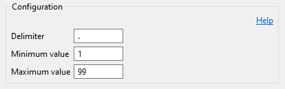

The available options are:
| Delimiter | - | Delimiter that separates the member name from the sequence number. |
| Minimum value | - | Specifies the starting value of the sequence number. |
| Maximum value | - | Specifies the maximum value of the sequence number. Renaming a member fails when the maximum sequence number has been reached. |
Sequence numbers are generated as fixed-length numbers, such as .01, .02, .03 to .99. For example:
| Original name | - | DEMO1 |
| First backup | - | DEMO1.01 |
| Second backup | - | DEMO1.02 |
| Third backup | - | DEMO1.03 |
Gaps in the list of existing backup members are not filled but skipped. For example consider the following situation:
| DEMO1 |
| DEMO1.01 |
| DEMO1.02 |
| DEMO1.03 |
| DEMO1.04 (missing) |
| DEMO1.05 (missing) |
| DEMO1.06 |
| DEMO1.07 (next backup member name) |
In the example above, the next backup member name will be DEMO1.07, because the gaps of DEMO1.04 and DEMO1.05 are skipped.
There will be an exception, when the new member name exceeds 10 characters.